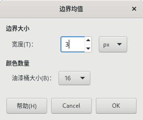

颜色→信息→边界均值 Border Average

颜色→信息→边界均值
此命令会计算活动图层或选区的边框的使用最多的颜色，并将计算结果设置为前景色。
如果您需要找到一个与图像边框差异尽可能小的网页背景颜色，那么这个工具应该比较方便。
此命令不会修改图像，但可能会修改前景色。所以，执行完此命令后，图像不会有任何变化，而前景色可能会有变化。
边界大小：可以设置边界的宽度值，单位是像素，可以改为其它单位。
颜色数量：油漆桶大小 可以控制被认为是相似的颜色的数量，并且用同一个“油漆桶”来计算。较低的 油漆桶大小(等同于较高的桶数量)可以让您在计算平均颜色时有更好的精度，但精度高不一定意味着结果一定好。